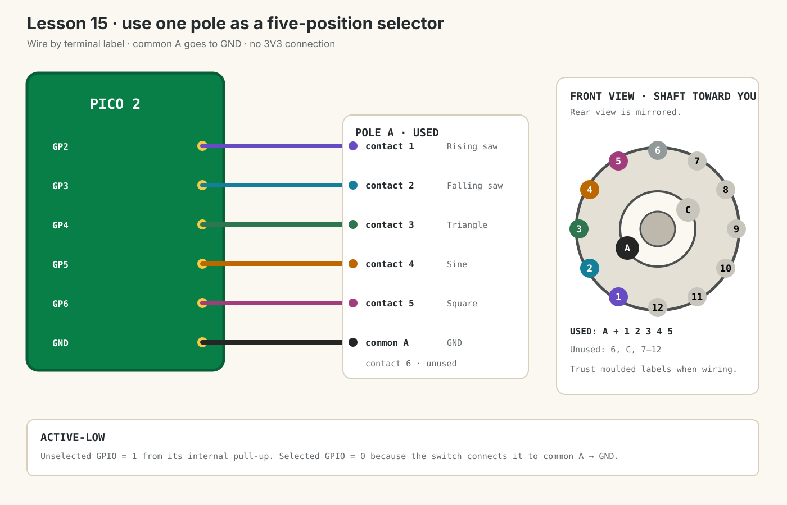

Dub Siren V3 · lesson 0015
Read the Mod Type selector
Wire the Lorlin CK1050 as five digital choices and print the selected modulation shape.
1. One common chooses one contact
A rotary selector is different from a potentiometer. A pot produces a continuously changing voltage. This selector makes one direct electrical connection at a time.
Your CK1050 contains two separate six-position switches, called poles:
- Pole A connects common A to one of contacts 1–6.
- Pole C connects common C to one of contacts 7–12.
We need only five choices, so this lesson uses common A and contacts 1–5. Contact 6 and the complete C pole stay unconnected.
| Physical position | Contact | Pico | Printed value | Mod shape |
|---|---|---|---|---|
| 1 | 1 | GP2 | 0 | Rising saw |
| 2 | 2 | GP3 | 1 | Falling saw |
| 3 | 3 | GP4 | 2 | Triangle |
| 4 | 4 | GP5 | 3 | Sine |
| 5 | 5 | GP6 | 4 | Square |
Show answer
GP4. Physical contact 3 is wired to GP4, so the code prints software value 2 and “Triangle”.
2. Wire one pole with USB unplugged
- Unplug the Pico’s USB cable.
- Keep the complete Lesson 14 circuit in place.
- Find the tiny terminal labels on the CK1050. Use the labels—not a guessed clock position.
- Connect selector common A to the Pico’s shared GND.
- Connect contact 1 → GP2.
- Connect contact 2 → GP3.
- Connect contact 3 → GP4.
- Connect contact 4 → GP5.
- Connect contact 5 → GP6.
- Leave contact 6, common C and contacts 7–12 unconnected.

About the sixth click
You may leave the mechanical stop at six positions for this breadboard test. Position 6 will select the intentionally unused contact and print nothing. After the electrical test works, the adjustable stop can restrict travel to five positions for the final panel. Do not force the shaft past a stop.
3. Read five active-low inputs
This diagnostic temporarily replaces the Lesson 14 program so one new component is easy to understand. Run this main.py:
from machine import Pin
from time import sleep_ms
# Physical selector positions 1-5 connect to GP2-GP6.
# Pin.PULL_UP keeps every input at 1 until the selector grounds it.
selector_inputs = (
Pin(2, Pin.IN, Pin.PULL_UP),
Pin(3, Pin.IN, Pin.PULL_UP),
Pin(4, Pin.IN, Pin.PULL_UP),
Pin(5, Pin.IN, Pin.PULL_UP),
Pin(6, Pin.IN, Pin.PULL_UP),
)
mod_names = (
"Rising saw",
"Falling saw",
"Triangle",
"Sine",
"Square",
)
def read_mod_type():
# The selected input reads 0 because common A is connected to GND.
for index, input_pin in enumerate(selector_inputs):
if input_pin.value() == 0:
return index
# A break-before-make switch briefly selects nothing while turning.
return None
last_mod_type = None
while True:
mod_type = read_mod_type()
if mod_type is not None and mod_type != last_mod_type:
# Wait for the mechanical contact to settle, then verify it again.
sleep_ms(10)
if read_mod_type() == mod_type:
last_mod_type = mod_type
print("Mod type:", mod_type, mod_names[mod_type])
sleep_ms(5)Why an unselected input reads 1
Pin.PULL_UP activates a weak resistor inside the Pico between that GPIO and 3.3 V. With no external connection, the resistor gently holds the input at logic 1.
Why the selected input reads 0
The selector joins common A to one numbered contact. Because common A is connected to GND, the selected GPIO is pulled firmly to 0. This is called active-low: 0 means selected.
Why the code sometimes finds None
The CK1050 is break-before-make. While moving between positions, it disconnects the old contact before connecting the new one. For a tiny moment all five GPIOs can read 1. The function then returns None, and the program keeps the last valid Mod Type.
The 10 ms wait handles contact bounce: metal contacts can touch and release several times immediately after landing. The program waits, reads again, and accepts only a stable result.
4. Test all five positions
- Reconnect USB and run the code.
- Turn fully anticlockwise. The Shell should print
Mod type: 0 Rising saw. - Move clockwise one click at a time. Expect values 1, 2, 3 and 4.
- Stop on each position and gently move the cable bundle. The value must remain stable.
- If a sixth click exists, it should print nothing new.
Nothing prints in any position
Check common A reaches GND. Make sure you used A, not common C. Then verify contacts 1–5 reach GP2–GP6.
One position never prints
Unplug USB and reseat only that position’s wire. Follow the mapping table: contact 1→GP2 through contact 5→GP6.
The order is reversed or scrambled
The datasheet’s contact map is a front view. A rear view is mirrored. Follow the moulded terminal numbers; if necessary, swap only the numbered contact wires until GP2–GP6 follow positions 1–5.
Two choices appear while turning
That should not remain after the knob settles. Recheck that each GPIO wire reaches only one contact and inspect for touching bare wire or solder bridges.
Done means
- Common A reaches GND.
- Contacts 1–5 reach GP2–GP6 in order.
- The Shell prints five stable Mod Types, numbered 0–4.
- You can explain why selected means 0.
- The unused pole and contact 6 remain disconnected.
- GP10–GP12 remain free.
Tell your teaching agent: which Mod Type prints at each physical position, and whether your selector currently has five or six clicks.